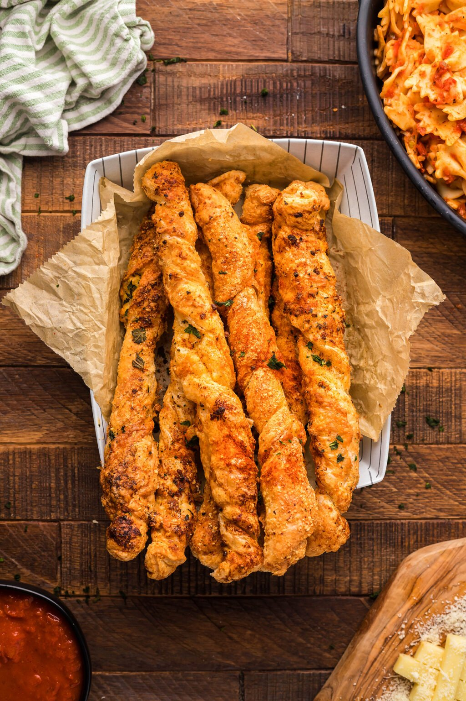

Cheese Twists

Air Fryer Puff Pastry Garlic Cheese Twists Recipe
Parmesan and mozzarella air fryer puff pastry garlic cheese twists make a wonderful air fryer appetizer or side dish. It is so easy to make cheese twists from scratch. Homemade puff pastry cheese straws are so much more delicious than the store-bought kind.
Ingredients
- 2 puff pastry sheets
- 1/2 Cup butter melted
- 8 Ounces mozzarella cheese block
- 2 Tablespoons parmesan grated
- 1 Teaspoon basil dried
- 5 garlic cloves minced
- 1/2 Teaspoon sea salt flakes
- 1/2 Teaspoon paprika
- 1 Tablespoon fresh basil chopped
- 1/2 Cup marinara sauce for dipping
Steps
- Allow puff pastry to thaw completely before starting
- Preheat the air fryer to 375 degrees F.
- Lightly flour a wooden cutting board and unroll the puff pastry.
- Cut the pastry into 1” strips
- Slice mozzarella into ¼” strips
- Combine melted butter, Parmesan, dried basil, minced garlic, and sea salt in a small mixing bowl. Mix well.
- Brush pastry with butter mix.
- Lay mozzarella down the center of the pastry strips. Twist tightly to cover the cheese.
- Brush pastry twists with butter. Arrange in a single layer in the air fryer basket leaving a half inch of space between each strip.
- Cook for 7 minutes.
- Sprinkle chopped basil over the strips and serve with marinara to dip.